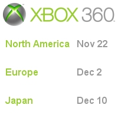

CESPage.com Xbox Weekly Update Sixteen
Xbox 360 Launched and Final Update
By CESPage.com Xbox, Published 11th December 2005
Xbox 360 Launched
10th December saw the launch of the Xbox 360 in Japan. If the console can succeed there then Microsoft can call these first three major launches a success,
Japan being the region where the Xbox was least popular.
Other regions should receive the Xbox 360 in early 2006, with the South Pacific regions between February and March and Australasia in March 2006 so by mid 2006
every region that had the original Xbox launched there should also have the Xbox 360 plus those in other regions who missed out on getting the console at launch.
CESPage.com Xbox have been playing on the Xbox 360 since the launch on December 2nd in Europe watch out for some reviews of the console, Perfect Dark Zero,
Project Gotham Racing 3 plus some of the Xbox Live Arcade games like Hexic HD and Bejewelled 2. Feel free to send a message or game invite to the CESPage.com Xbox
Gamertag : RoguePlanetoid.

Xbox 360 Final Update
CESPage.com Xbox Weekly Update Sixteen marks the last of the weekly updates designed to cover all the main news and rumours preceding the launch of the Xbox 360,
articles and press releases will still be added from time to time, only this update will end.
To mark the end of the Weekly Update here is a review of each update, Update One started with the Origen Xbox 360 website which at the time was an unknown website
but later turned out to be a contest to win a VIP trip to the Xbox 360 launch event. Update Two saw a prediction of the possible launch dates with a launch on
14th/19th of November for North America, Europe on the 25th of November and Japan on the 2nd of December, these dates were pretty accurate and only a few days or
a week out! Update Three saw a countdown appear on the Bizarre Creations website this was for a later announcement of a project they are doing for SEGA.
Update Four saw the announcement of the actual launch dates and a mention of how close CESPage.com Xbox was. Update Five saw the start of the countdown to the
three main releases which have ended now. Update Six mentioned what Origen Xbox 360 was really for and mentioned the controversy from those in North America about
this also.
Update Seven mentioned the X05 event in Europe which was a press-only event for the Xbox 360 to be unveiled in Europe before its launch. Update Eight mentioned the
Xbox 360 Kiosks now present in all major retailers but were just making an appearance at the time. Update Nine busted some rumours that were circulating on the
Internet regarding the Xbox 360 console. Update Ten featured the CESPage.com Xbox Gamer Card and the Hex 168 contest which was a contest similar in prize to the
Origen Xbox 360 contest thus the controversy over this stopped. Update Eleven mentioned the Xbox 360, 360 Hour Tour which CESPage.com Xbox attended which allowed
those in the UK to play on the console for the first time this included an article with some photos taken at the event. Update Twelve mentioned the Zero Hour launch
event for the Xbox 360 in North America. Update Thirteen mentioned the items that would be available at launch for the Xbox 360 in Europe. Update Fourteen featured
news about the North American Launch of the Xbox 360 and Update Fifteen featured similar news regarding the European launch of the console.